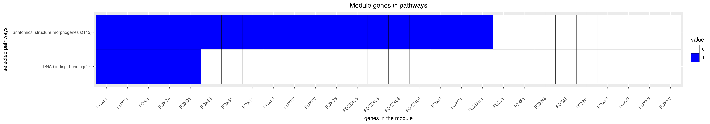

Back to main page
DREAM Module Identification Challenge – Consensus modules
PPI-STRING_Consensus_mod121
| Assigned name |
NA |
| Network |
PPI-STRING |
| Module ID |
PPI-STRING_Consensus_mod121 |
| Module size |
32 genes |
|
Module genes
This module comprises the following genes:
| Gene ID |
Gene Symbol |
Gene Name |
| 2296
|
FOXC1
|
forkhead box C1
|
| 2303
|
FOXC2
|
forkhead box C2
|
| 2297
|
FOXD1
|
forkhead box D1
|
| 2306
|
FOXD2
|
forkhead box D2
|
| 27022
|
FOXD3
|
forkhead box D3
|
| 2298
|
FOXD4
|
forkhead box D4
|
| 200350
|
FOXD4L1
|
forkhead box D4 like 1
|
| 349334
|
FOXD4L2
|
forkhead box D4 like 4
|
| 286380
|
FOXD4L3
|
forkhead box D4 like 3
|
| 349334
|
FOXD4L4
|
forkhead box D4 like 4
|
| 653427
|
FOXD4L5
|
forkhead box D4 like 5
|
| 653404
|
FOXD4L6
|
forkhead box D4 like 6
|
| 2304
|
FOXE1
|
forkhead box E1
|
| 2301
|
FOXE3
|
forkhead box E3
|
| 2294
|
FOXF1
|
forkhead box F1
|
| 2295
|
FOXF2
|
forkhead box F2
|
| 2299
|
FOXI1
|
forkhead box I1
|
| 399823
|
FOXI2
|
forkhead box I2
|
| 2302
|
FOXJ1
|
forkhead box J1
|
| 55810
|
FOXJ2
|
forkhead box J2
|
| 22887
|
FOXJ3
|
forkhead box J3
|
| 2300
|
FOXL1
|
forkhead box L1
|
| 668
|
FOXL2
|
forkhead box L2
|
| 8456
|
FOXN1
|
forkhead box N1
|
| 3344
|
FOXN2
|
forkhead box N2
|
| 1112
|
FOXN3
|
forkhead box N3
|
| 121643
|
FOXN4
|
forkhead box N4
|
| 116113
|
FOXP4
|
forkhead box P4
|
| 94234
|
FOXQ1
|
forkhead box Q1
|
| 283150
|
FOXR1
|
forkhead box R1
|
| 139628
|
FOXR2
|
forkhead box R2
|
| 2307
|
FOXS1
|
forkhead box S1
|
|
Functional annotation
Modules were tested for enrichment in functional and pathway annotations using two complementary approaches:
1. To select a small number of specific / non-redundant annotations for each module, a regression-based approach was used;
2. To obtain the complete set of enriched annotations, an extension of Fisher’s exact test that takes annotation bias into account was employed (Wallenius’ non-central hypergeometric distribution).
Most specific annotations for this module
1Regression coefficient
2Fisher’s exact test nominal P-value
3Annotation source (Reactome, GO biological process (BP), molecular function (MF) and cellular component (CC))
4GO category or Reactome pathway
5High-level branch of annotation tree
Gene membership

All enriched annotations
Gene Ontology
11Nominal enrichment p-value (Wallenius’ noncentral hypergeometric distribution)
2FDR corrected p-value (Benjamini-Hochberg)
Mouse mutant phenotypes
11Nominal enrichment p-value (Wallenius’ noncentral hypergeometric distribution)
2FDR corrected p-value (Benjamini-Hochberg)
Generated on: Thu Aug 30 17:25:42 2018 - R2HTML